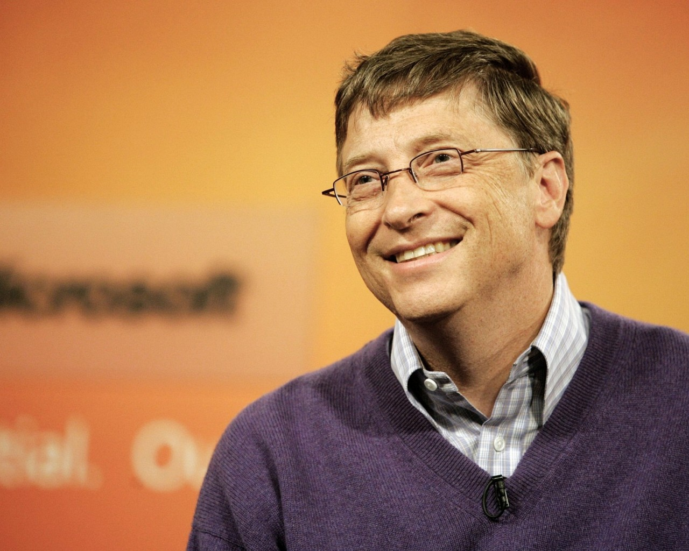
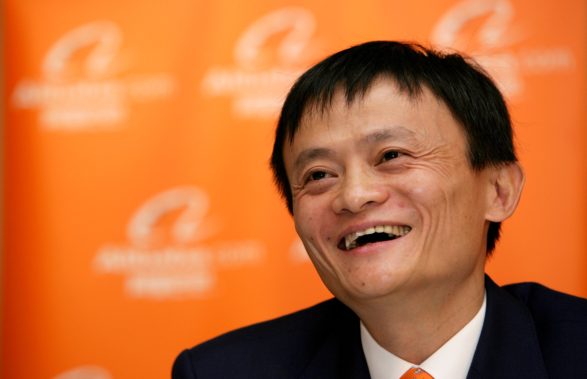
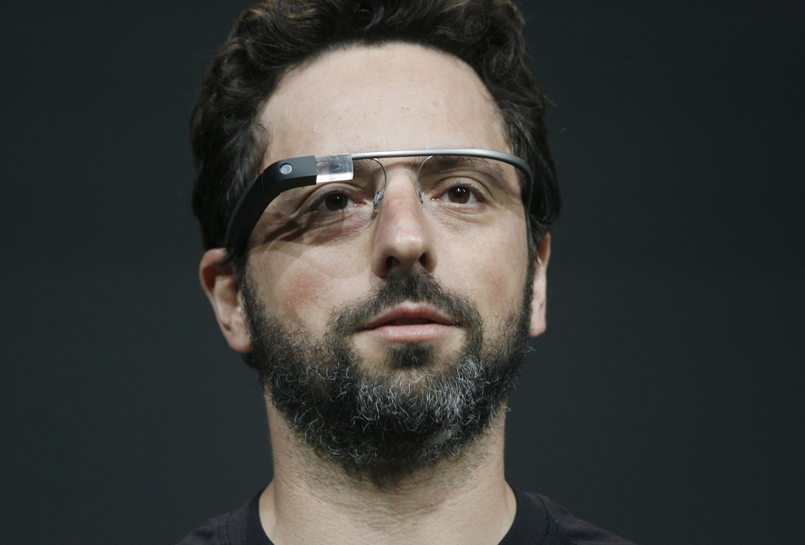
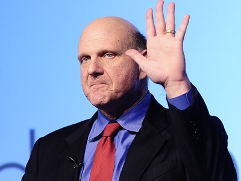
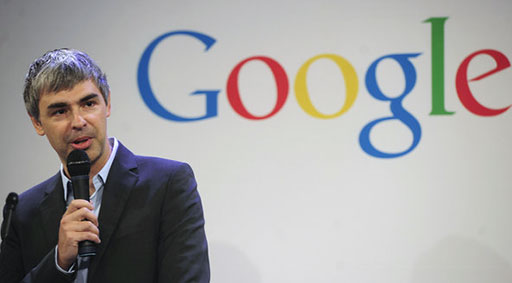

Увидеть своё имя в рейтинге Forbes – мечта любого успешного человека. Только вот каждый выбирает свой путь к этой цели. Кто-то начинает заниматься инвестированием, кто-то находит себя в продаже драгоценных металлов, а кто-то и вовсе создает продукты, без которых свою жизнь потом не может представить половина населения планеты. Вариантов много. Ниже представлены люди которые своим трудом добились успеха и заработавших своё состояние при помощи Информационных Технологий.
Билл Гейтс (Bill Gates)
Американский предприниматель и общественный деятель, филантроп, один из создателей и бывший крупнейший акционер компании Microsoft.
Впервые самым богатым человеком на планете стал он в 1996 году и примечательно, что с тех пор ситуация не изменилась. Только в 2008 году Уорену Баффету и Карлосу Слиму Элу удалось сдвинуть Билла на третье место, но уже через 12 месяцев его имя вновь красовалось на лидирующей позиции мирового рейтинга Forbes. Только вот компьютерная корпорация – не единственное достижение в жизни Гейтса. В 1994 году он вместе со своей женой Мелиндой основал благотворительный фонд, который на сегодняшний день является крупнейшим в мире, имея в своём распоряжении около 35 млрд долларов. Уильяма Генри Гейтса часто считают миллиардером без высшего образования, но в 2007 году Билл всё же получил диплом Гарвардского университета, который бросил в 1975 году на втором курсе, чтобы полностью посвятить себя программированию. Сейчас первый номер Forbes занимает пост председателя совета директоров Microsoft, но с каждым годом он всё больше и больше времени уделяет развитию своего фонда, главная цель которого – борьба с глобальными мировыми проблемами.
Чудесно праздновать свой успех, но более важным является умение выносить уроки из своих провалов.
Джек Ма (Jack Ma)
Китайский предприниматель, основатель и председатель совета директоров компании Alibaba Group.
Вряд ли Джек Ма и его партнёры могли представить, что созданная ими в 1999 году за 60 тыс. долларов B2B-площадка Alibaba через несколько лет превратится в компанию с капитализацией в 270 млрд долларов. Но прежде чем мечты превратились в реальность, пришлось пройти через множество сложностей. В 1995 году, посетив Сиэтл, Джек Ма впервые познакомился с Интернетом. Всемирная паутина так сильно повлияла на его взгляды, что всего через несколько месяцев будущий миллиардер создал небольшую компанию по разработке веб-сайтов. Чуть позже он основал «ту самую сказочную компанию», которая смогла затмить eBay (представительство в Китае американцам и вовсе пришлось закрыть из-за проигранной конкуренции). В 2013 году Ма Юнь ушёл с поста президента фирмы, но остался в совете директоров. А всего через десять месяцев после этого Alibaba выходит на IPO, собрав рекордную сумму инвестиций – 25 млрд долларов. На ближайшее будущее у азиатской корпорации очень глобальные планы (например, создание первого частного банка в Китае), и, поверьте, Джек Ма и его коллеги сделают всё возможное, чтобы достичь своей цели.
Если ваш конкурент меньше вас или слишком слаб, вы все равно должны относиться к нему, как к равному. Аналогично, если ваш конкурент гораздо больше вас, не бойтесь его.
Сергей Брин (Sergey Brin)
Американский предприниматель и учёный в области вычислительной техники, информационных технологий и экономики. Семья Сергея Брина, того самого сооснователя Google, эмигрировала в Штаты из Москвы, когда мальчику было пять лет. Уже во время учёбы в Стэнфордском университете Сергей начал активно изучать всевозможные поисковые машины, даже написал несколько исследований на эту тему. Знакомство с Ларри Пейджом произошло тоже в стенах этого учреждения. В 1995 году студент с дипломом магистра и аспирант-математик вместе изучали поисковые машины, а спустя три года объявили о создании компании Google. Бизнес практически сразу начал приносить свои плоды, и уже в 2004 году Сергей Брин впервые попал в список Forbes с состоянием в 4 млрд долларов. На данный момент он занимает пост президента по технологическим разработкам в собственной компании, воспитывает двух детей и активностарается сделать мир лучше.
Чем активнее ты пробуешь что-то новое, тем больше у тебя шансов наткнуться на что-то действительно стоящее.
Стив Балмер (Steve Ballmer)
Генеральный директор Корпорации Майкрософт с января 2000 года по февраль 2014. В 2013 году он, будучи наёмным работником, обладал состоянием в $15,2 млрд, что по данным журнала Forbes соответствует 51 месту в списке богатейших людей планеты, и первому в списке богатейших людей не являющихся собственниками бизнеса или их родственниками. Балмер стал первым миллиардером в мире, обязанным своим состоянием опционам, полученным от своего работодателя — корпорации Microsoft, в которой он не был ни основателем, ни родственником основателя.
Стива Балмера, занимающего пост генерального директора Microsoft на протяжении целых 14 лет (с 2000 года по 2014), можно смело считать самой неоднозначной личностью в этом списке. За время, проведённое у руля Microsoft, ему удалось увеличить годовой доход корпорации с 25 млрд долларов до 70 млрд, но бездарно упущенные развивающие рынки поспособствовали тому, что в 2012 году Стива признали «худшим CEO публичной американской компании». Но это не помешало ему войти в список богатейших людей на планете.
Великие компании начинаются с великих лидеров.
Ларри Пейдж (Larry Page)
Родился будущий сооснователь Google в семье, занимающейся преподаванием компьютерных наук в Университете штата Мичиган, поэтому ещё с детства будущий миллиардер проявлял интерес к высоким технологиям. Вряд ли парень из небольшого (по американским меркам) городка мог тогда подумать, что любимое дело поможет ему подняться на 19 строчку Forbes, но встреча всей его жизни в Стэнфордском университете с Сергеем Брином дала надежду на успех. В 2011 году Пейдж занял пост главного исполнительного директора, сменив Эрика Шмидта, занимающего эту должность на протяжении десяти лет. По состоянию на май 2015 года иерархия корпорации таковой и осталась: Ларри занимается вопросами управления, а Сергей отвечает за технологические разработки.
Лучше пусть конкуренты думают, что мы растерянны, чем они будут знать наши планы.
Олег Гуцол
Олег Гуцол родился в Киеве, впоследствии эмигрировал в канадский Торонто. В 2009 году вместе с россиянином Евгением Чеботаревым запустил ресурс фотохостинга для фотографов 500px. В июне 2011 года количество пользователей сервиса превысило 80 000 человек, тогда же Deep Creek Capital и ff Venture Capital инвестировали в проект более полумиллиона долларов. Уже к концу 2011 года количество пользователей выросло до 3 млн человек. Олег Гуцол занял пост управляющего директора компании. В середине 2012 года 500px инвестировала $2 млн в канадский стартап Algo Anywhere, а в конце прошлого года – в Pulpfingers, разработчика фотоприложений для iOS-устройств. Издание TechVibes признало 500px лучшим канадским стартапом 2012 года.
Сегодня Информационные Технологии занимают значительную часть в жизни каждого. Мы исользуем интернет, приложения, программы для ежедневного пользования и удобства. Здесь представлены успешные люди со всего мира, подтверждая то, что не важно от куда ты, главное - цель. Телекоммуникации и IT-технологии развиваются так интенсивно, что изменения в них происходят за сравнительно короткие сроки. Например, интернет – одно из популярнейших средств связи – из ведомственной сети преобразовался во всемирную инфраструктуру. За 30 лет его существования доступ к нему появился более чем в 180 странах мира, а интернет-пользователей сейчас насчитывается едва ли не 3 миллиарда.Человечество переходит на новый уровень общения и передачи информации, а это означает, что впереди у телекоммуникаций и IT-технологий множество перемен. И самыми главными реформаторами в этом деле станут люди, получившие образование в области связи и информатики.